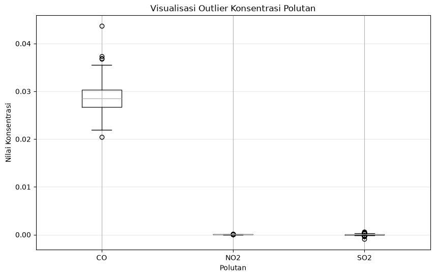
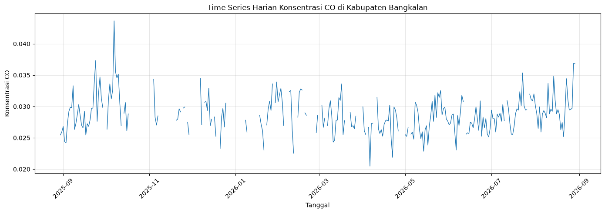
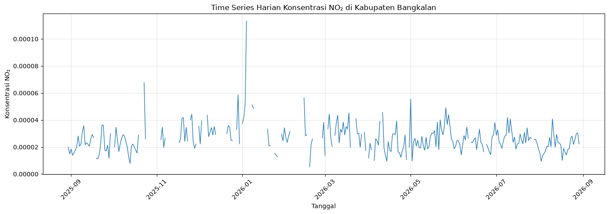
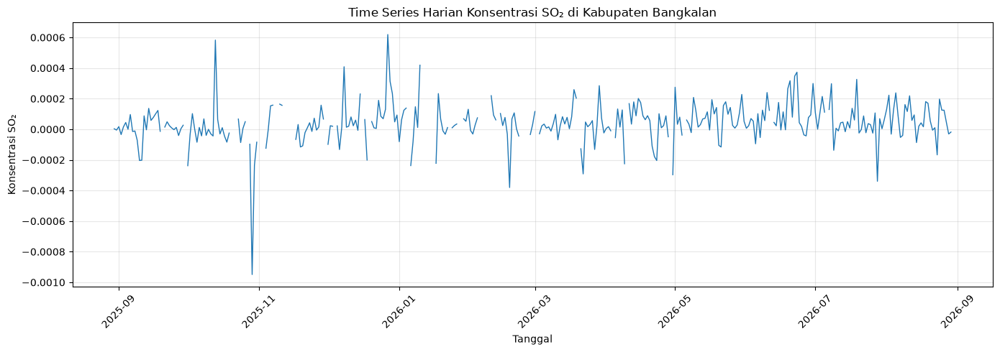

Data Understanding#
Di tahap Data Understanding, kita mulai “berteman” dengan data: dari mana asalnya, seperti apa bentuknya, seberapa lengkap, dan apakah ada nilai yang aneh (outlier). Semua ini penting sebelum masuk ke analisis yang lebih dalam.
1. Sumber Data#
Data polutan udara yang digunakan dalam analisis ini diperoleh dari dataspace.copernicus.eu. Data berasal dari pengamatan satelit Sentinel-5P yang diakses melalui layanan openEO.
Pengambilan data dilakukan dengan menentukan wilayah pengamatan menggunakan Area of Interest (AOI). AOI digunakan untuk membatasi wilayah data sehingga analisis difokuskan pada Kabupaten Bangkalan, Jawa Timur. Dengan periode 30 Agustus 2025 - 30 Agustus 2026
2. Penentuan Wilayah Pengamatan#
Wilayah pengamatan dalam analisis ini adalah Kabupaten Bangkalan, Jawa Timur. Untuk membatasi data agar sesuai dengan wilayah kajian, digunakan Area of Interest (AOI) dalam bentuk polygon.
Polygon AOI dibentuk berdasarkan koordinat geografis yang merepresentasikan wilayah Kabupaten Bangkalan. Koordinat tersebut digunakan sebagai batas spasial dalam proses pengambilan data, koordinat menggunakan alat bantu pemetaan geojson.io. Setiap titik koordinat pada polygon menggunakan format [longitude, latitude], sehingga posisi geografis wilayah dapat ditentukan secara lebih spesifik.
Atribut |
Nilai |
Keterangan |
|---|---|---|
west |
112.6751542 |
Longitude terkecil (batas kiri) |
south |
-7.2320899 |
Latitude terkecil (batas bawah) |
east |
113.1302065 |
Longitude terbesar (batas kanan) |
north |
-6.8663627 |
Latitude terbesar (batas atas) |
3. Pengumpulan Data#
Install Library#
Untuk melakukan proses crawling data, kita membutuhkan pustaka Python pendukung yaitu openeo untuk berkomunikasi dengan API Copernicus.
pip install openeo
27.17s - pydevd: Sending message related to process being replaced timed-out after 5 seconds
Collecting openeo
Downloading openeo-0.51.0-py3-none-any.whl (349 kB)
━━━━━━━━━━━━━━━━━━━━━━━━━━━━━━━━━━━━━━━ 349.2/349.2 kB 6.2 MB/s eta 0:00:00a 0:00:01
?25hRequirement already satisfied: requests>=2.26.0 in /opt/conda/lib/python3.11/site-packages (from openeo) (2.31.0)
Requirement already satisfied: urllib3>=1.9.0 in /opt/conda/lib/python3.11/site-packages (from openeo) (2.0.3)
Collecting shapely>=1.6.4 (from openeo)
Downloading shapely-2.1.2-cp311-cp311-manylinux2014_x86_64.manylinux_2_17_x86_64.whl (3.1 MB)
━━━━━━━━━━━━━━━━━━━━━━━━━━━━━━━━━━━━━━━━ 3.1/3.1 MB 38.1 MB/s eta 0:00:0000:0100:01
?25hCollecting numpy>=1.17.0 (from openeo)
Downloading numpy-2.4.6-cp311-cp311-manylinux_2_27_x86_64.manylinux_2_28_x86_64.whl (16.9 MB)
━━━━━━━━━━━━━━━━━━━━━━━━━━━━━━━━━━━━━━━━ 16.9/16.9 MB 14.9 MB/s eta 0:00:0000:0100:01
?25hCollecting xarray<2025.01.2,>=0.12.3 (from openeo)
Downloading xarray-2025.1.1-py3-none-any.whl (1.2 MB)
━━━━━━━━━━━━━━━━━━━━━━━━━━━━━━━━━━━━━━━━ 1.2/1.2 MB 89.3 MB/s eta 0:00:00
?25hCollecting pandas<3.0.0,>0.20.0 (from openeo)
Downloading pandas-2.3.3-cp311-cp311-manylinux_2_24_x86_64.manylinux_2_28_x86_64.whl (12.8 MB)
━━━━━━━━━━━━━━━━━━━━━━━━━━━━━━━━━━━━━━━━ 12.8/12.8 MB 87.4 MB/s eta 0:00:0000:0100:01
?25hCollecting pystac>=1.5.0 (from openeo)
Downloading pystac-1.15.2-py3-none-any.whl (5.7 kB)
Collecting deprecated>=1.2.12 (from openeo)
Downloading deprecated-1.3.1-py2.py3-none-any.whl (11 kB)
Collecting geopandas>=0.14 (from openeo)
Downloading geopandas-1.1.4-py3-none-any.whl (343 kB)
━━━━━━━━━━━━━━━━━━━━━━━━━━━━━━━━━━━━━━ 343.3/343.3 kB 51.4 MB/s eta 0:00:00
?25hCollecting wrapt<3,>=1.10 (from deprecated>=1.2.12->openeo)
Downloading wrapt-2.4.0-cp311-cp311-manylinux1_x86_64.manylinux_2_28_x86_64.manylinux_2_5_x86_64.whl (217 kB)
━━━━━━━━━━━━━━━━━━━━━━━━━━━━━━━━━━━━━━ 217.8/217.8 kB 36.1 MB/s eta 0:00:00
?25hCollecting pyogrio>=0.7.2 (from geopandas>=0.14->openeo)
Downloading pyogrio-0.13.0-cp311-abi3-manylinux_2_28_x86_64.whl (33.3 MB)
━━━━━━━━━━━━━━━━━━━━━━━━━━━━━━━━━━━━━━━━ 33.3/33.3 MB 58.3 MB/s eta 0:00:0000:0100:01
?25hRequirement already satisfied: packaging in /opt/conda/lib/python3.11/site-packages (from geopandas>=0.14->openeo) (23.1)
Collecting pyproj>=3.5.0 (from geopandas>=0.14->openeo)
Downloading pyproj-3.7.2-cp311-cp311-manylinux_2_28_x86_64.whl (9.5 MB)
━━━━━━━━━━━━━━━━━━━━━━━━━━━━━━━━━━━━━━━━ 9.5/9.5 MB 61.8 MB/s eta 0:00:0000:0100:01
?25hRequirement already satisfied: python-dateutil>=2.8.2 in /opt/conda/lib/python3.11/site-packages (from pandas<3.0.0,>0.20.0->openeo) (2.8.2)
Requirement already satisfied: pytz>=2020.1 in /opt/conda/lib/python3.11/site-packages (from pandas<3.0.0,>0.20.0->openeo) (2023.3)
Requirement already satisfied: tzdata>=2022.7 in /opt/conda/lib/python3.11/site-packages (from pandas<3.0.0,>0.20.0->openeo) (2026.2)
Collecting pystac-core<2,>=1.15.0 (from pystac>=1.5.0->openeo)
Downloading pystac_core-1.15.2-py3-none-any.whl (117 kB)
━━━━━━━━━━━━━━━━━━━━━━━━━━━━━━━━━━━━━━ 117.3/117.3 kB 25.1 MB/s eta 0:00:00
?25hCollecting pystac-ext-classification (from pystac>=1.5.0->openeo)
Downloading pystac_ext_classification-2.0.1-py3-none-any.whl (7.4 kB)
Collecting pystac-ext-datacube (from pystac>=1.5.0->openeo)
Downloading pystac_ext_datacube-2.2.1-py3-none-any.whl (7.1 kB)
Collecting pystac-ext-eo (from pystac>=1.5.0->openeo)
Downloading pystac_ext_eo-1.1.1-py3-none-any.whl (7.7 kB)
Collecting pystac-ext-file (from pystac>=1.5.0->openeo)
Downloading pystac_ext_file-2.1.1-py3-none-any.whl (5.8 kB)
Collecting pystac-ext-grid (from pystac>=1.5.0->openeo)
Downloading pystac_ext_grid-1.1.1-py3-none-any.whl (3.6 kB)
Collecting pystac-ext-item-assets (from pystac>=1.5.0->openeo)
Downloading pystac_ext_item_assets-1.0.1-py3-none-any.whl (3.7 kB)
Collecting pystac-ext-label (from pystac>=1.5.0->openeo)
Downloading pystac_ext_label-1.0.2-py3-none-any.whl (8.2 kB)
Collecting pystac-ext-mgrs (from pystac>=1.5.0->openeo)
Downloading pystac_ext_mgrs-1.0.1-py3-none-any.whl (4.1 kB)
Collecting pystac-ext-mlm (from pystac>=1.5.0->openeo)
Downloading pystac_ext_mlm-1.4.1-py3-none-any.whl (13 kB)
Collecting pystac-ext-pointcloud (from pystac>=1.5.0->openeo)
Downloading pystac_ext_pointcloud-1.0.1-py3-none-any.whl (6.5 kB)
Collecting pystac-ext-projection (from pystac>=1.5.0->openeo)
Downloading pystac_ext_projection-2.0.1-py3-none-any.whl (7.4 kB)
Collecting pystac-ext-raster (from pystac>=1.5.0->openeo)
Downloading pystac_ext_raster-1.1.1-py3-none-any.whl (6.8 kB)
Collecting pystac-ext-render (from pystac>=1.5.0->openeo)
Downloading pystac_ext_render-2.0.0-py3-none-any.whl (5.0 kB)
Collecting pystac-ext-sar (from pystac>=1.5.0->openeo)
Downloading pystac_ext_sar-1.0.1-py3-none-any.whl (6.5 kB)
Collecting pystac-ext-sat (from pystac>=1.5.0->openeo)
Downloading pystac_ext_sat-1.0.1-py3-none-any.whl (4.9 kB)
Collecting pystac-ext-scientific (from pystac>=1.5.0->openeo)
Downloading pystac_ext_scientific-1.0.1-py3-none-any.whl (5.5 kB)
Collecting pystac-ext-storage (from pystac>=1.5.0->openeo)
Downloading pystac_ext_storage-2.0.1-py3-none-any.whl (7.6 kB)
Collecting pystac-ext-table (from pystac>=1.5.0->openeo)
Downloading pystac_ext_table-1.2.1-py3-none-any.whl (4.7 kB)
Collecting pystac-ext-timestamps (from pystac>=1.5.0->openeo)
Downloading pystac_ext_timestamps-1.1.1-py3-none-any.whl (4.6 kB)
Collecting pystac-ext-version (from pystac>=1.5.0->openeo)
Downloading pystac_ext_version-1.2.1-py3-none-any.whl (5.8 kB)
Collecting pystac-ext-view (from pystac>=1.5.0->openeo)
Downloading pystac_ext_view-1.0.1-py3-none-any.whl (4.8 kB)
Collecting pystac-ext-xarray-assets (from pystac>=1.5.0->openeo)
Downloading pystac_ext_xarray_assets-1.0.1-py3-none-any.whl (3.9 kB)
Requirement already satisfied: charset-normalizer<4,>=2 in /opt/conda/lib/python3.11/site-packages (from requests>=2.26.0->openeo) (3.2.0)
Requirement already satisfied: idna<4,>=2.5 in /opt/conda/lib/python3.11/site-packages (from requests>=2.26.0->openeo) (3.4)
Requirement already satisfied: certifi>=2017.4.17 in /opt/conda/lib/python3.11/site-packages (from requests>=2.26.0->openeo) (2026.5.20)
Collecting packaging (from geopandas>=0.14->openeo)
Downloading packaging-26.3-py3-none-any.whl (129 kB)
━━━━━━━━━━━━━━━━━━━━━━━━━━━━━━━━━━━━━━━ 130.0/130.0 kB 1.3 MB/s eta 0:00:00a 0:00:01
?25hRequirement already satisfied: six>=1.5 in /opt/conda/lib/python3.11/site-packages (from python-dateutil>=2.8.2->pandas<3.0.0,>0.20.0->openeo) (1.16.0)
Installing collected packages: wrapt, pyproj, packaging, numpy, shapely, pystac-core, pyogrio, pandas, deprecated, xarray, pystac-ext-xarray-assets, pystac-ext-view, pystac-ext-version, pystac-ext-timestamps, pystac-ext-table, pystac-ext-storage, pystac-ext-scientific, pystac-ext-sat, pystac-ext-sar, pystac-ext-render, pystac-ext-raster, pystac-ext-projection, pystac-ext-pointcloud, pystac-ext-mgrs, pystac-ext-label, pystac-ext-item-assets, pystac-ext-grid, pystac-ext-file, pystac-ext-datacube, geopandas, pystac-ext-eo, pystac-ext-classification, pystac-ext-mlm, pystac, openeo
Attempting uninstall: packaging
Found existing installation: packaging 23.1
Uninstalling packaging-23.1:
Successfully uninstalled packaging-23.1
Successfully installed deprecated-1.3.1 geopandas-1.1.4 numpy-2.4.6 openeo-0.51.0 packaging-26.3 pandas-2.3.3 pyogrio-0.13.0 pyproj-3.7.2 pystac-1.15.2 pystac-core-1.15.2 pystac-ext-classification-2.0.1 pystac-ext-datacube-2.2.1 pystac-ext-eo-1.1.1 pystac-ext-file-2.1.1 pystac-ext-grid-1.1.1 pystac-ext-item-assets-1.0.1 pystac-ext-label-1.0.2 pystac-ext-mgrs-1.0.1 pystac-ext-mlm-1.4.1 pystac-ext-pointcloud-1.0.1 pystac-ext-projection-2.0.1 pystac-ext-raster-1.1.1 pystac-ext-render-2.0.0 pystac-ext-sar-1.0.1 pystac-ext-sat-1.0.1 pystac-ext-scientific-1.0.1 pystac-ext-storage-2.0.1 pystac-ext-table-1.2.1 pystac-ext-timestamps-1.1.1 pystac-ext-version-1.2.1 pystac-ext-view-1.0.1 pystac-ext-xarray-assets-1.0.1 shapely-2.1.2 wrapt-2.4.0 xarray-2025.1.1
Note: you may need to restart the kernel to use updated packages.
Koneksi dan Otentikasi#
Langkah pertama adalah menghubungkan ke server openEO dan melakukan otentikasi menggunakan akun Copernicus Data Space.
import openeo
connection = openeo.connect("openeo.dataspace.copernicus.eu").authenticate_oidc()
Setelah menjalankan sel ini, klik link autentikasi yang muncul, lalu login menggunakan akun Copernicus kamu.
Pengambilan Data#
Data dikumpulkan menggunakan layanan openEO dengan koleksi Sentinel-5P. Proses pengambilan data dilakukan berdasarkan wilayah AOI Kabupaten Bangkalan dan periode pengamatan yang telah ditentukan.
aoi = {
"type": "FeatureCollection",
"features": [
{
"type": "Feature",
"properties": {},
"geometry": {
"type": "Polygon",
"coordinates": [
[
[
112.6751542,
-6.8663627
],
[
113.1302065,
-6.8663627
],
[
113.1302065,
-7.2320899
],
[
112.6751542,
-7.2320899
],
[
112.6751542,
-6.8663627
]
]
]
}
}
]
}
Data kemudian diagregasi:
Agregasi temporal → menjadi nilai rata‑rata harian.
Agregasi spasial → dirata‑ratakan di seluruh area AOI, sehingga diperoleh satu nilai per hari yang merepresentasikan kondisi rata‑rata wilayah Bangkalan.
Berikut contoh kode untuk masing‑masing polutan.
1. NO2#
s5NO2 = connection.load_collection(
"SENTINEL_5P_L2",
temporal_extent=["2025-08-30", "2026-08-30"],
spatial_extent={
"west": 112.6751542,
"south": -7.2320899,
"east": 113.1302065,
"north": -6.8663627
},
bands=["NO2"],
)
# Agregasi harian
s5p_NO2_daily = s5NO2.aggregate_temporal_period(
reducer="mean",
period="day"
)
# Agregasi spasial berdasarkan AOI
s5p_NO2_aoi = s5p_NO2_daily.aggregate_spatial(
reducer="mean",
geometries=aoi
)
Hasil pengolahan kemudian disimpan dalam format CSV.
# Simpan hasil sebagai CSV
result_NO2 = s5p_NO2_aoi.save_result(
format="CSV"
)
# Jalankan job
job_NO2 = result_NO2.create_job(
title="s5p_NO2_timeseries"
)
job_NO2.start_and_wait()
# Download CSV
job_NO2.get_results().download_files("output_NO2")
0:00:00 Job 'j-2608301629214c98a68cb85e50fac22d': send 'start'
0:00:02 Job 'j-2608301629214c98a68cb85e50fac22d': created (progress 0%)
0:00:07 Job 'j-2608301629214c98a68cb85e50fac22d': queued (progress 0%)
0:00:14 Job 'j-2608301629214c98a68cb85e50fac22d': queued (progress 0%)
0:00:22 Job 'j-2608301629214c98a68cb85e50fac22d': queued (progress 0%)
0:00:31 Job 'j-2608301629214c98a68cb85e50fac22d': queued (progress 0%)
0:00:44 Job 'j-2608301629214c98a68cb85e50fac22d': queued (progress 0%)
0:00:59 Job 'j-2608301629214c98a68cb85e50fac22d': queued (progress 0%)
0:01:18 Job 'j-2608301629214c98a68cb85e50fac22d': queued (progress 0%)
0:01:42 Job 'j-2608301629214c98a68cb85e50fac22d': running (progress N/A)
0:02:12 Job 'j-2608301629214c98a68cb85e50fac22d': running (progress N/A)
0:02:50 Job 'j-2608301629214c98a68cb85e50fac22d': running (progress N/A)
0:03:36 Job 'j-2608301629214c98a68cb85e50fac22d': running (progress N/A)
0:04:34 Job 'j-2608301629214c98a68cb85e50fac22d': running (progress N/A)
0:05:35 Job 'j-2608301629214c98a68cb85e50fac22d': finished (progress 100%)
[PosixPath('output_NO2/timeseries.csv'),
PosixPath('output_NO2/job-results.json')]
2. CO#
s5CO = connection.load_collection(
"SENTINEL_5P_L2",
temporal_extent=["2025-08-30", "2026-08-30"],
spatial_extent={
"west": 112.6751542,
"south": -7.2320899,
"east": 113.1302065,
"north": -6.8663627
},
bands=["CO"],
)
# Agregasi harian
s5p_CO_daily = s5CO.aggregate_temporal_period(
reducer="mean",
period="day"
)
# Agregasi spasial berdasarkan AOI
s5p_CO_aoi = s5p_CO_daily.aggregate_spatial(
reducer="mean",
geometries=aoi
)
# Simpan hasil sebagai CSV
result_CO = s5p_CO_aoi.save_result(
format="CSV"
)
# Jalankan job
job_CO = result_CO.create_job(
title="s5p_CO_timeseries"
)
job_CO.start_and_wait()
# Download CSV
job_CO.get_results().download_files("output_CO")
0:00:00 Job 'j-26083016345946ab9f15644b35eb2e98': send 'start'
0:00:02 Job 'j-26083016345946ab9f15644b35eb2e98': created (progress 0%)
0:00:07 Job 'j-26083016345946ab9f15644b35eb2e98': queued (progress 0%)
0:00:13 Job 'j-26083016345946ab9f15644b35eb2e98': queued (progress 0%)
0:00:21 Job 'j-26083016345946ab9f15644b35eb2e98': queued (progress 0%)
0:00:31 Job 'j-26083016345946ab9f15644b35eb2e98': queued (progress 0%)
0:00:44 Job 'j-26083016345946ab9f15644b35eb2e98': queued (progress 0%)
0:00:59 Job 'j-26083016345946ab9f15644b35eb2e98': queued (progress 0%)
0:01:18 Job 'j-26083016345946ab9f15644b35eb2e98': queued (progress 0%)
0:01:42 Job 'j-26083016345946ab9f15644b35eb2e98': queued (progress 0%)
0:02:12 Job 'j-26083016345946ab9f15644b35eb2e98': queued (progress 0%)
0:02:49 Job 'j-26083016345946ab9f15644b35eb2e98': running (progress N/A)
0:03:36 Job 'j-26083016345946ab9f15644b35eb2e98': running (progress N/A)
0:04:34 Job 'j-26083016345946ab9f15644b35eb2e98': running (progress N/A)
0:05:34 Job 'j-26083016345946ab9f15644b35eb2e98': finished (progress 100%)
[PosixPath('output_CO/timeseries.csv'),
PosixPath('output_CO/job-results.json')]
3. S02#
s5SO2 = connection.load_collection(
"SENTINEL_5P_L2",
temporal_extent=["2025-08-30", "2026-08-30"],
spatial_extent={
"west": 112.6751542,
"south": -7.2320899,
"east": 113.1302065,
"north": -6.8663627
},
bands=["SO2"],
)
# Agregasi harian
s5p_SO2_daily = s5SO2.aggregate_temporal_period(
reducer="mean",
period="day"
)
# Agregasi spasial berdasarkan AOI
s5p_SO2_aoi = s5p_SO2_daily.aggregate_spatial(
reducer="mean",
geometries=aoi
)
# Simpan hasil sebagai CSV
result_SO2 = s5p_SO2_aoi.save_result(
format="CSV"
)
# Jalankan job
job_SO2 = result_SO2.create_job(
title="s5p_SO2_timeseries"
)
job_SO2.start_and_wait()
# Download CSV
job_SO2.get_results().download_files("output_SO2")
0:00:00 Job 'j-26083016403543c88bce07f48d464319': send 'start'
0:00:03 Job 'j-26083016403543c88bce07f48d464319': created (progress 0%)
0:00:08 Job 'j-26083016403543c88bce07f48d464319': queued (progress 0%)
0:00:14 Job 'j-26083016403543c88bce07f48d464319': queued (progress 0%)
0:00:22 Job 'j-26083016403543c88bce07f48d464319': queued (progress 0%)
0:00:32 Job 'j-26083016403543c88bce07f48d464319': queued (progress 0%)
0:00:44 Job 'j-26083016403543c88bce07f48d464319': running (progress N/A)
0:01:00 Job 'j-26083016403543c88bce07f48d464319': running (progress N/A)
0:01:19 Job 'j-26083016403543c88bce07f48d464319': running (progress N/A)
0:01:43 Job 'j-26083016403543c88bce07f48d464319': running (progress N/A)
0:02:13 Job 'j-26083016403543c88bce07f48d464319': running (progress N/A)
0:02:50 Job 'j-26083016403543c88bce07f48d464319': running (progress N/A)
0:03:37 Job 'j-26083016403543c88bce07f48d464319': finished (progress 100%)
[PosixPath('output_SO2/timeseries.csv'),
PosixPath('output_SO2/job-results.json')]
Tampilan Data CSV#
import pandas as pd
# Membaca masing-masing CSV
df_CO = pd.read_csv("./mystorage/output_CO/timeseries.csv")
df_NO2 = pd.read_csv("./mystorage/output_NO2/timeseries.csv")
df_SO2 = pd.read_csv("./mystorage/output_SO2/timeseries.csv")
# Melihat struktur masing-masing data
print("CO:")
display(df_CO.head(5))
print("NO₂:")
display(df_NO2.head(5))
print("SO₂:")
display(df_SO2.head(5))
CO:
| date | feature_index | CO | |
|---|---|---|---|
| 0 | 2025-09-25T00:00:00.000Z | 0 | 0.027630 |
| 1 | 2025-09-27T00:00:00.000Z | 0 | 0.034706 |
| 2 | 2025-09-23T00:00:00.000Z | 0 | 0.033936 |
| 3 | 2025-09-24T00:00:00.000Z | 0 | 0.037339 |
| 4 | 2025-09-21T00:00:00.000Z | 0 | 0.029730 |
NO₂:
| date | feature_index | NO2 | |
|---|---|---|---|
| 0 | 2026-08-28T00:00:00.000Z | 0 | 0.000030 |
| 1 | 2026-08-25T00:00:00.000Z | 0 | 0.000022 |
| 2 | 2026-08-27T00:00:00.000Z | 0 | 0.000030 |
| 3 | 2026-08-24T00:00:00.000Z | 0 | 0.000028 |
| 4 | 2026-08-29T00:00:00.000Z | 0 | 0.000022 |
SO₂:
| date | feature_index | SO2 | |
|---|---|---|---|
| 0 | 2026-03-03T00:00:00.000Z | 0 | -0.000029 |
| 1 | 2026-03-05T00:00:00.000Z | 0 | 0.000034 |
| 2 | 2026-03-06T00:00:00.000Z | 0 | 0.000008 |
| 3 | 2026-03-02T00:00:00.000Z | 0 | NaN |
| 4 | 2026-03-01T00:00:00.000Z | 0 | 0.000116 |
4. Eksplorasi Data#
Pemeriksaan Missing Values#
Pemeriksaan missing values dilakukan untuk mengetahui kelengkapan data konsentrasi masing-masing polutan. Pemeriksaan ini penting karena tidak semua hari dalam periode pengamatan memiliki nilai konsentrasi polutan.
Berdasarkan hasil pemeriksaan awal, seluruh dataset memiliki 366 baris. Namun, jumlah data yang tersedia pada masing-masing parameter berbeda. Hal tersebut menunjukkan bahwa terdapat beberapa waktu pengamatan yang tidak memiliki nilai konsentrasi polutan.
# Menghitung missing values
missing_CO = df_CO["CO"].isna().sum()
missing_NO2 = df_NO2["NO2"].isna().sum()
missing_SO2 = df_SO2["SO2"].isna().sum()
print("Missing values CO :", missing_CO)
print("Missing values NO₂ :", missing_NO2)
print("Missing values SO₂ :", missing_SO2)
Missing values CO : 87
Missing values NO₂ : 74
Missing values SO₂ : 44
Identifikasi Outlier#
Outlier merupakan nilai pengamatan yang memiliki karakteristik berbeda atau berada jauh dari sebagian besar distribusi data. Dalam analisis kualitas udara, nilai yang tinggi tidak selalu berarti kesalahan data karena dapat menunjukkan kondisi tertentu pada waktu pengamatan.
Oleh karena itu, pada tahap Data Understanding, outlier hanya diidentifikasi dan tidak langsung dihapus. Identifikasi dilakukan menggunakan metode Interquartile Range (IQR), yaitu dengan menentukan batas bawah dan batas atas berdasarkan kuartil pertama (Q1) dan kuartil ketiga (Q3).
!pip install matplotlib
import pandas as pd
# Membaca masing-masing CSV
df_CO = pd.read_csv("./mystorage/output_CO/timeseries.csv")
df_NO2 = pd.read_csv("./mystorage/output_NO2/timeseries.csv")
df_SO2 = pd.read_csv("./mystorage/output_SO2/timeseries.csv")
# Mengubah kolom date menjadi datetime
df_CO["date"] = pd.to_datetime(df_CO["date"])
df_NO2["date"] = pd.to_datetime(df_NO2["date"])
df_SO2["date"] = pd.to_datetime(df_SO2["date"])
# Menggabungkan berdasarkan tanggal
df = df_CO[["date", "CO"]].merge(
df_NO2[["date", "NO2"]],
on="date",
how="outer"
).merge(
df_SO2[["date", "SO2"]],
on="date",
how="outer"
)
# Mengurutkan berdasarkan tanggal
df = df.sort_values("date").reset_index(drop=True)
# Melihat hasil
display(df.head())
| date | CO | NO2 | SO2 | |
|---|---|---|---|---|
| 0 | 2025-08-29 00:00:00+00:00 | NaN | NaN | NaN |
| 1 | 2025-08-30 00:00:00+00:00 | 0.025453 | 0.000020 | 0.000003 |
| 2 | 2025-08-31 00:00:00+00:00 | 0.025945 | 0.000015 | -0.000005 |
| 3 | 2025-09-01 00:00:00+00:00 | 0.026809 | 0.000019 | 0.000017 |
| 4 | 2025-09-02 00:00:00+00:00 | 0.024403 | 0.000014 | -0.000035 |
# IDENTIFIKASI OUTLIER MENGGUNAKAN IQR
polutan = ["CO", "NO2", "SO2"]
hasil_outlier = []
data_outlier = {}
for kolom in polutan:
data = df[["date", kolom]].dropna()
Q1 = data[kolom].quantile(0.25)
Q3 = data[kolom].quantile(0.75)
IQR = Q3 - Q1
batas_bawah = Q1 - 1.5 * IQR
batas_atas = Q3 + 1.5 * IQR
outlier = data[
(data[kolom] < batas_bawah) |
(data[kolom] > batas_atas)
]
hasil_outlier.append({
"Polutan": kolom,
"Jumlah Data": len(data),
"Q1": Q1,
"Q3": Q3,
"IQR": IQR,
"Batas Bawah": batas_bawah,
"Batas Atas": batas_atas,
"Jumlah Outlier": len(outlier)
})
data_outlier[kolom] = outlier.sort_values(
by=kolom,
ascending=False
)
# Tabel ringkasan
outlier_summary = pd.DataFrame(hasil_outlier)
print("=== OUTLIER ===")
display(outlier_summary)
=== OUTLIER ===
| Polutan | Jumlah Data | Q1 | Q3 | IQR | Batas Bawah | Batas Atas | Jumlah Outlier | |
|---|---|---|---|---|---|---|---|---|
| 0 | CO | 279 | 0.026708 | 0.030267 | 0.003560 | 0.021368 | 0.035607 | 5 |
| 1 | NO2 | 292 | 0.000020 | 0.000031 | 0.000011 | 0.000004 | 0.000046 | 10 |
| 2 | SO2 | 322 | -0.000011 | 0.000100 | 0.000111 | -0.000177 | 0.000266 | 29 |
import matplotlib.pyplot as plt
# Visualisasi boxplot CO, NO₂, dan SO₂
plt.figure(figsize=(10, 6))
df[["CO", "NO2", "SO2"]].boxplot()
plt.title("Visualisasi Outlier Konsentrasi Polutan")
plt.xlabel("Polutan")
plt.ylabel("Nilai Konsentrasi")
plt.grid(axis="y", alpha=0.3)
plt.show()

5. Visualisasi Time Series#
Visualisasi time series digunakan untuk menggambarkan perubahan konsentrasi polutan udara dari waktu ke waktu. Pada analisis ini, data yang digunakan merupakan data harian selama periode pengamatan 30 Agustus 2025 hingga 30 Agustus 2026. Kolom date digunakan sebagai sumbu waktu, sedangkan nilai masing-masing polutan digunakan sebagai nilai konsentrasi pada setiap tanggal pengamatan.
import matplotlib.pyplot as plt
# Memastikan kolom date sudah dalam format datetime
df["date"] = pd.to_datetime(df["date"])
# Mengurutkan data berdasarkan tanggal
df = df.sort_values("date")
# TIME SERIES CO
plt.figure(figsize=(14, 5))
plt.plot(
df["date"],
df["CO"],
linewidth=1
)
plt.title("Time Series Harian Konsentrasi CO di Kabupaten Bangkalan")
plt.xlabel("Tanggal")
plt.ylabel("Konsentrasi CO")
plt.grid(True, alpha=0.3)
plt.xticks(rotation=45)
plt.tight_layout()
plt.show()
# TIME SERIES NO₂
plt.figure(figsize=(14, 5))
plt.plot(
df["date"],
df["NO2"],
linewidth=1
)
plt.title("Time Series Harian Konsentrasi NO₂ di Kabupaten Bangkalan")
plt.xlabel("Tanggal")
plt.ylabel("Konsentrasi NO₂")
plt.grid(True, alpha=0.3)
plt.xticks(rotation=45)
plt.tight_layout()
plt.show()
# TIME SERIES SO₂
plt.figure(figsize=(14, 5))
plt.plot(
df["date"],
df["SO2"],
linewidth=1
)
plt.title("Time Series Harian Konsentrasi SO₂ di Kabupaten Bangkalan")
plt.xlabel("Tanggal")
plt.ylabel("Konsentrasi SO₂")
plt.grid(True, alpha=0.3)
plt.xticks(rotation=45)
plt.tight_layout()
plt.show()


